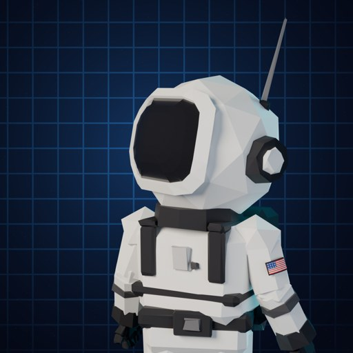

3D.whatif
Real physics. Simulated in 3D. Seen through your eyes.
3D.whatif makes short vertical videos that answer "What if...?" questions in first person: what you would see, hear and feel if something extraordinary happened around you. Every scene is computer-generated (CGI); the numbers on screen come from published science and are labelled as facts, estimates or assumptions.
Find us on TikTok, YouTube and Facebook as 3D.whatif.
About the publishing tool
The channel uses a small personal tool that uploads our own finished videos to our own TikTok, YouTube and Facebook accounts through their official APIs. It is not offered to other users and does not access anyone else's account or data.